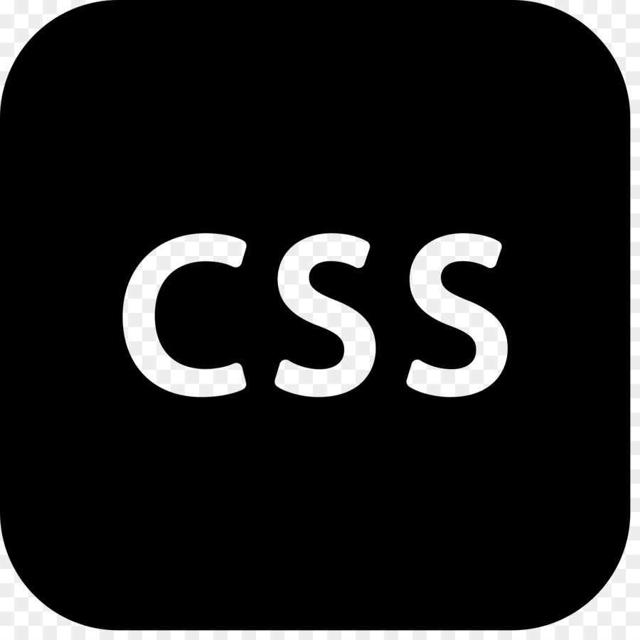

CSS (Cascading Style Sheets) - to język arkuszy stylów, który służy do stylizacji stron internetowych i dokumentów HTML. CSS określa wygląd i formatowanie elementów na stronie internetowej, takich jak czcionki, kolory, rozmiary, układ i inne aspekty projektowania.
Przykład stylizacji nagłówka i akapitu:
/* Stylizacja nagłówka */
h1 {
color: blue;
font-size: 24px;
}
/* Stylizacja akapitu */
p {
color: gray;
font-size: 16px;
line-height: 1.5;
}
Przykład tworzenia listy z punktami:
/* Stylizacja listy z punktami */
ul {
list-style-type: circle;
color: green;
font-size: 18px;
}
/* Stylizacja elementów listy */
li {
margin-bottom: 8px;
}
Przykład dodawania tła do obrazu:
/* Stylizacja obrazu */
img {
width: 100%;
height: auto;
border-radius: 8px;
box-shadow: 0 0 10px rgba(0, 0, 0, 0.1);
}